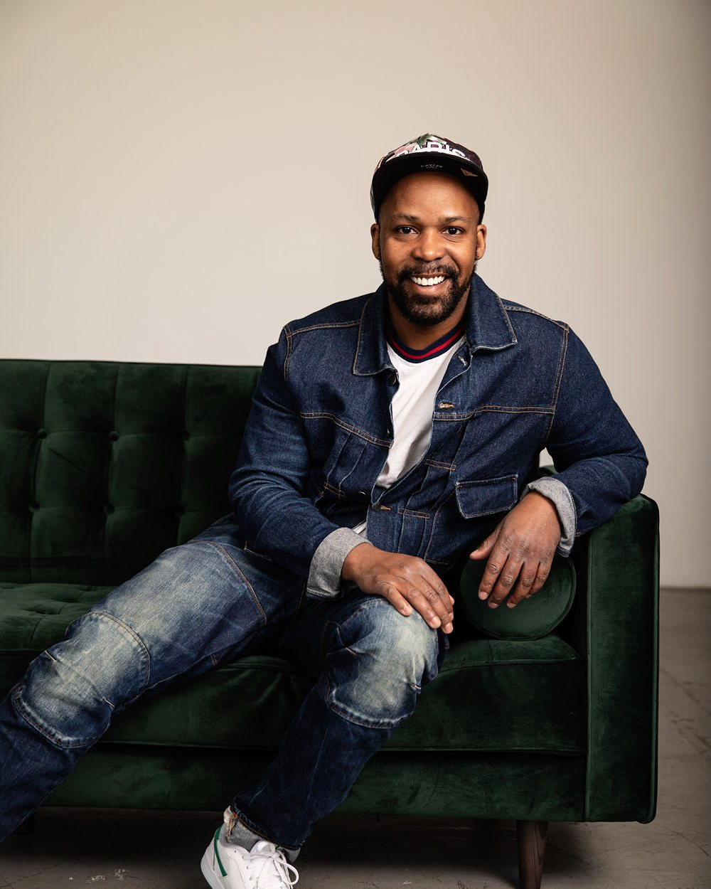
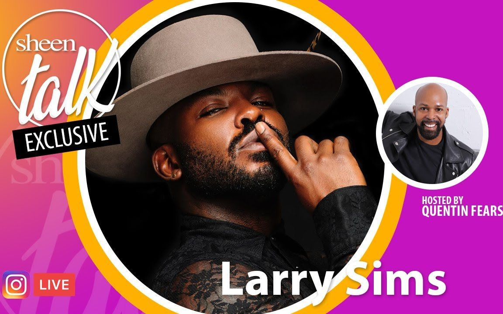

Fashion creative leadership & visual strategy
Quentin
Fears
Fashion creative leader, visual strategist, speaker & host.
I help brands and people use style to say who they are — and who they're becoming. I've spent a decade proving it look by look. Now I direct the vision.

01
I lead at scale
I direct visual merchandising and styling in enterprise fashion at Walmart — the largest retailer in the world.
02
I'm quoted on it
TIME and Glamour have come to me on how what you wear changes the way you're read at work.
03
I've done the work
I've dressed red carpets, directed editorials, and shot campaigns. I know what it takes to make the picture.
The idea
What you wear changes how people read you before you speak. Style is how you tell them who you're becoming.The belief behind every project
Selected work
The finished look is the easy part. The thinking is the work.
I open every project with three questions. What's the story? Who is telling it? And what do the clothes do to them? A few examples.
Making an everyday brand feel intentional
I turn business goals into a visual language — across campaigns, store floors, and the teams who build them.
Point of viewThe office dress code, after it broke
When offices reopened, the old rules were dead. I said so in TIME, and people still repeat it back to me.
EditorialStyling as a mini-play
I treat a shoot like a role — story, character, and what the clothes do to the person wearing them.

Speak & host
Put me on a stage and I'll make style make sense.
Keynotes, panels, workshops, hosting. On how style shapes perception, how to dress with intent, and how I moved from doing the work to directing it. I've done it on camera with Tommy Hilfiger, on Sheen Talk Live, and for Black News Channel.
Talk topics & booking →In their words
The people I've worked with say it better than I could.
He listens first, then translates exactly what you're trying to say into something you can see and wear.
Santana DempseyActor & client
Reliable on set and a real collaborator on the design — he understands what it takes to actually produce the work.
Brian S.Photographer & collaborator
He stepped into a mentor role and taught me a whole language of how to dress.
Personal styling clientvia Thumbtack
Seen & featured
Let's make sure you're read the way you intend.
Creative direction, speaking, media, or personal styling. Tell me what you're building.